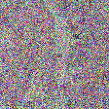
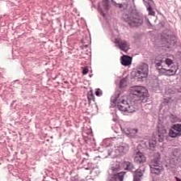

Two-stage training
Denoise real patches, then match sets of samples to sets of real patches.
denoise


match sets
samples · one stepreal patches
Details
Training follows Priming. Stage 1 (100k updates of 1,024 patches): a real patch with noise at a randomly drawn, mostly high level goes in, the clean patch comes out; the loss is pixel error plus LPIPS plus a feature distance under our image–text encoder. Stage 2 (25k updates; 64 conditions with 16 samples and 16 real patches each): from pure noise, samples are compared as a set with real patches of the same prompt, in the features of frozen ImageNet encoders, with a Sinkhorn optimal-transport distance. Every real patch has to be matched, so samples cannot all look alike. No VAE, no pathology foundation model.